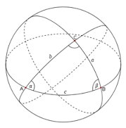

这是一枚平凡的骰子。它是一个均质凸多面体，表面有 $n$ 个端点，有 $f$ 个面，每一面是一个凸多边形，且任意两面不共面。将这枚骰子抛向空中，骰子落地的时候不会发生二次弹跳（这是一种非常理想的情况）。你希望知道最终每一面着地的概率。每一面着地的概率可以用如下的方法计算：我们假设 $O$ 为骰子的重心，并以 $O$ 为球心，做半径为 $1$ 的单位球面（记为 $S$）。我们知道 $S$ 的表面积即单位球的表面积，为 $4\pi$，这里 $\pi$ 为圆周率。对于骰子的某一面 $C$ 来说，球面 $S$ 上存在一块区域 $T$ 满足：当下落时若骰子所受重力方向与 $S$ 的交点落在 $T$ 中，则 $C$ 就是最终着地的一面。那么 $C$ 着地的概率为区域 $T$ 的面积除以 $4\pi$。为了能更好地辅助计算球面上一块区域的面积，我们给出单位球面 $S$ 上三角形的面积计算公式。考虑单位球面 $S$ 上的三个两两相交的大圆，交点依次为 $A$，$B$ 和 $C$。则曲面三角形 $ABC$ 的面积为 $\text{Area}(ABC)=\alpha+\beta+\gamma-\pi$，其中 $\alpha$，$\beta$ 和 $\gamma$ 分别对应了三个二面角的大小。如下图所示。

我们保证：每一面着地的时候，重心的垂心都恰好在这一面内。也就是说不会出现摆不稳的情况。
第一行输入两个整数，分别表示端点总数 $n$ 与表面总数 $f$，分别从 $1$ 开始编号。
之后 $n$ 行，每行有三个浮点数 $x$，$y$ 和 $z$，给出了每一个端点的坐标。
之后 $f$ 行依次描述了每一块表面，首先给出不小于 $3$ 的整数 $d$，表示这一面的端点个数，之后 $d$ 个整数按照逆时针方向（视角在骰子的外面）给出了每一个端点的编号。
输出 $f$ 行，第 $i$ 行有一个浮点数，表示第 $i$ 个面着地的概率。本题中您的输出应该保留距离答案最近的七位小数，即在需要保留七位小数的前提之下与标准答案最接近。数据保证可以避免对小数点后第八位四舍五入后产生的精度误差。
8 6 1 0 0 1 1 0 1 0 1 1 1 1 0 0 0 0 1 0 0 0 1 0 1 1 4 1 2 4 3 4 2 6 8 4 4 6 5 7 8 4 5 1 3 7 4 3 4 8 7 4 1 5 6 2
0.1666667 0.1666667 0.1666667 0.1666667 0.1666667 0.1666667
对于所有的数据，$4 \leq n \leq 50$ 且 $4 \leq f \leq 80$，所有坐标的绝对值都在 $10000$ 以内。
 Comet OJ
Comet OJ